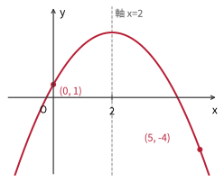

ホーム ＞ 数学I ＞ 2次関数のグラフ
放物線の軸が直線 \(x=2\) で、2点 \((0,\ 1)\)、\((5,\ -4)\) を通るとき、この2次関数を求めよ。
軸が \(x=2\) なので、頂点の \(x\) 座標が2。そこで \(y=a(x-2)^2+q\) とおく。未知数は \(a,\ q\) の2つで、通る2点から2つの式が立つ。
軸 \(x=2\) より

\((0,1)\)：
\((5,-4)\)：
② − ①：
①に代入：
\(x=0\)：\(y=1\)。\(x=5\)：\(y=-25+20+1=-4\)。
【答案（テストに書く形）】
答